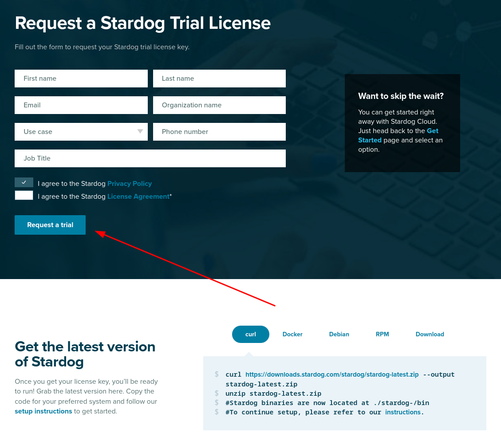

SysAdmin
These instructions are for a sysadmin looking to deploy Neurobagel locally in an institute or lab.
Ecosystem
The Neurobagel ecosystem consists of four tools:
- the annotation tool
- to create harmonized annotations of phenotypic data
- intended for use by researchers and domain experts
- static site, deployed on Github Pages
- annotate.neurobagel.org
- the CommandLineInterface
- to extract metadata from annotated phenotypic and BIDS data
- intended for data managers to create graph ready data
- neurobagel/bagel-cli
- the graph and API
- to store and query extracted metadata
- intended for platform owners and for isolated deployments
- api.neurobagel.org
- The query tool
- to create cohort queries and display results
- intended for use by researchers and data consumers
- static site, deployed on Github Pages
- query.neurobagel.org
Todo
Add Neurobagel figure for overview.
Get a license for Stardog
We use Stardog as our Graph store application. Stardog has a free, annually renewable license for academic use. In order to make a separate deployment of Neurobagel, you should therefore first request your own Stardog license. You can request a Stardog license here:
https://www.stardog.com/license-request/
Don't pick the wrong license
Stardog is a company that offers their graph store solutions both as a self-hosted, downloadable tool (what we want) and as a cloud hosted subscription model (what we do not want). Both tiers offer free access and the website has a tendency to steer you towards the cloud offering. Make sure you request a license key for Stardog.

The Stardog license is typically automatically granted via email in 24 hours.
The license you receive will be a downloadable file. It is valid for one year and for a major version of Stardog. You will need to download the license in a place that is accessible to your new Stardog instance when it is launched (see below).
Launch the API and Graph stack
Please follow the instructions here
to pull the API and Stardog Docker images
and then launch both via docker compose (Option 1).
Your license file has to be in the STARDOG_HOME directory.
Ensure that shell variables do not clash with .env file
When you follow the setup docs for the API, make sure to explicitly set the following variables:
USERNAMEPASSWORDGRAPH_DBSTARDOG_ROOT
If the shell you run docker compose from already has any
shell variable of the same name set,
the shell variable will take precedence over the configuration
of .env!
Either unset the local variable or export the .env file first.
See also the docs.
Setup for the first run
When you launch the Stardog graph for the first time, there are a couple of setup steps that need to be done. These will not have to be repeated for subsequent starts.
To intereact with the Stardog graph, you have two general options:
- Send HTTP request against the HTTP API of the Stardog graph instance (e.g. with
curl). See https://stardog-union.github.io/http-docs/ for a full reference of API endpoints - Use the free Stardog-Studio web app. See the Stardog documention for instruction to deploy Stardog-Studio as a Docker container.
Info
Stardog-Studio is the most accessible way of manually interacting with a Stardog instance. Here we will focus instead on using the HTTP API for configuration, as this allows programmatic access. All of these steps can also be achieved via Stardog-Studio manually. Please refer to the official docs to learn how.
Change the superuser password
When you first launch Stardog,
a default admin user with superuser privilege
will automatically be created for you.
You should first change the password of this user:
curl -X PUT -i -u "admin:admin" http://localhost:5820/admin/users/admin/pwd \
--data '{"password": "NewPassword"}'
Create a new user
The .env file created as part of the docker compose setup instructions
declares the USERNAME and PASSWORD for the API user.
The API will send requests to the graph using these credentials.
When you launch Stardog for the first time,
we have to create this user:
curl -X POST -i -u "admin:NewPassword" http://localhost:5820/admin/users \
-H 'Content-Type: application/json' \
--data '{
"username": "NewUser",
"password": [
"NewUserPassword"
]
}'
Confirm that the new user exists:
curl -u "admin:NewPassword" http://localhost:5820/admin/users
Note
Make sure to use the exact USERNAME and PASSWORD you
defined in the .env file when creating the new user.
Otherwise the API will not have the correct permission
to query the graph.
Create new database
When you first launch Stardog, there are no graph databases. You have to create a new one to store your metadata.
If you have defined a custom GRAPH_DB name in the .env file,
make sure to create a database with a matching name.
By default the API will query a graph database
with a name of test_data.
curl -X POST -i -u "admin:NewPassword" http://localhost:5820/admin/databases \
--form 'root="{\"dbname\":\"test_data\"}"'
Now we need to give our new user read and write permission for this database:
curl -X PUT -i -u "admin:NewPassword" http://localhost:5820/admin/permissions/user/NewUser \
-H 'Content-Type: application/json' \
--data '{
"action": "ALL",
"resource_type": "DB",
"resource": [
"test_data"
]
}'
Finer permission control is also possible
For simplicity's sake, here we give "ALL" permission to the user.
The Stardog API provide more fine grained permission control.
See the official API documentation.
Add some test data
In order to test that the setup has worked correctly, we need to add some data to the database.
You can take two example files from the Neurobagel example repository to get started:
Normally you would create these files by first annotating the phenotypic information of a BIDS dataset with the Neurobagel annotator, and then parsing the annotated BIDS dataset with the Neurobagel CLI.
Upload the example files to the graph using this command:
curl -u "admin:NewPassword" -i -X POST http://localhost:5820/test_data \
-H "Content-Type: text/turtle" \
--data-binary @example_1.ttl
Test the new deployment
You can run a test query against the API:
curl -X 'GET' \
'http://localhost:8000/query/' \
-H 'accept: application/json'
or directly use the interactive documentation of the API.